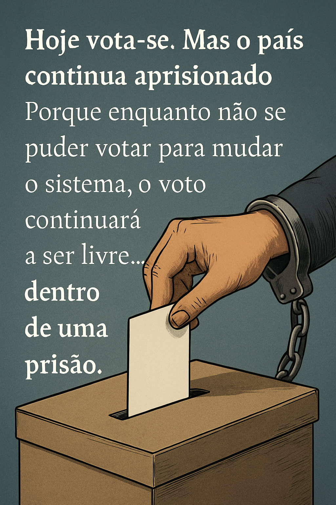

Publicado em 2025-05-18 08:28:18
Hoje é dia de eleições em Portugal.
Mais uma vez, o povo caminha em fila para exercer o seu “direito sagrado” — o voto.
Mas o que parece escolha é, na verdade, um ritual esvaziado.
Uma missa cívica onde o eleitor repete gestos de esperança com resultados de resignação.
Porque o voto é livre, sim. Mas as opções estão prisioneiras.
Os partidos do sistema oferecem variações de uma mesma tragédia:
a obsessão pelo orçamento, a captura do Estado pelos interesses, o desfile cíclico de figuras recicladas que mudam de pasta mas não de postura.
Falam de futuro, mas vivem presos ao passado.
Falam de mudança, mas representam apenas continuidade.
Portugal vive num regime de alternância sem alternativa.
A alternância é entre os mesmos: os que há décadas se revezam, mudando os nomes, mantendo as redes.
O cidadão vota, mas não escolhe o sistema.
Não pode votar para acabar com os partidos que o traíram.
Não pode votar para criar um novo modelo democrático.
Não pode votar para recomeçar — apenas para manter.
O povo, esse, já percebeu.
Vota com raiva, ou com tédio.
Vota por exclusão, ou não vota.
E quando vota por protesto, o sistema reage — não com humildade, mas com medo.
Hoje vota-se. Mas o país continua aprisionado.
Na urna, depositamos o boletim.
Mas o que nos falta é poder depositar uma exigência, um grito, uma reinvenção.
Porque enquanto não se puder votar para mudar o sistema,
o voto continuará a ser livre... dentro de uma prisão.
Por Francisco Gonçalves